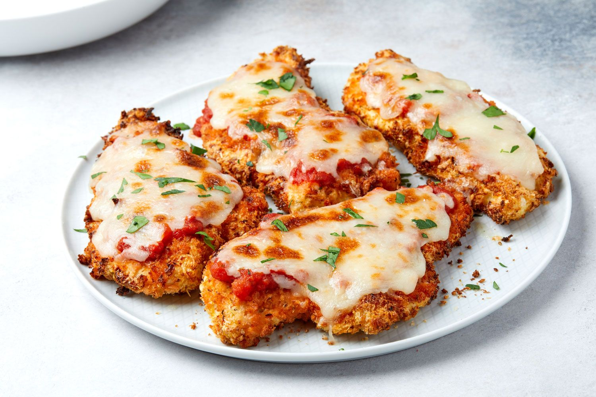

Chicken Parmesan Recipe

Chicken Parmesan
Chicken Parmesan is one of the most popular non-pasta dish in Italian-American style restaurants. Despite its fancy looks, it's easy to make at home. Chicken Parmesan is probably even better to make at home in your kitchen. This recipe has the perfect chicken to sauce ratio so that it is not just a soggy piece of chicken and cheese.
This recipe does not overwhelm the chicken with all of the sauce and cheese like most recipes. The trick to a good Chicken Parmesan is to not put any sauce beneath the chicken cutlets, and just to add a little bit of sauce on the top so that the breading stays nice and crispy. Another great way to enjoy this is by adding grated Parmesan to the breadcrumb mixture, which adds even more flavor. Here are the instructions on how to make this great recipe.
Ingredients:
- 4 skinless, boneless chicken breast halves
- salt and freshly ground black pepper to taste
- 2 large eggs
- 1 cup panko bread crumbs, or more as needed
- 3/4 cup grated Parmesan cheese, divided
- 2 tablespoons all-purpose flour, or more if needed
- 1/2 cup olive oil for frying, or as needed
- 1/2 cup fresh mozzarella, cut into small cubes
- 1/4 cup chopped fresh basil
- 1/2 cup grated provolone cheese
- 2 teaspoons olive oil
Directions:
- Preheat an oven to 450 degrees F (230 degrees C).
- Place chicken breasts between two sheets of heavy plastic (resealable freezer bags work well) on a solid, level surface. Firmly pound chicken with the smooth side of a meat mallet to a thickness of 1/2-inch. Season chicken thoroughly with salt and pepper.
- Beat eggs in a shallow bowl and set aside.
- Mix bread crumbes and 1/2 cup Parmesan cheese in a separate bowl, set aside.
- Place flour in a sifter or strainer; sprinkle over chicken breasts, evenly coating both sides.
- Dip a flour-coated chicken breast in beaten eggs. Transfer breast to the bread crumb mixture, pressing crumbs into both sides. Repeat for each breast. Let chicken rest for 10 to 15 minutes.
- Heat 1/2 inch olive oil in a large skillet on medium-high heat until it begins to shimmer. Cook chicken in the hot oil until golden, about 2 minutes per side. The chicken will finish cooking in the oven.
- Transfer chicken to a baking dish. Top each breast with 2 tablespoons tomato sauce. Layer each chicken breast with equal amounts of mozzarella cheese, fresh basil, and provolone cheese. Sprinkle remaining Parmesan over top and drizzle each with 1/2 teaspoon olive oil.
- Bake in the preheated oven until cheese is browned and bubbly and chicken breasts are no longer pink in the center, 15 to 20 minutes. An instant-read thermometer inserted into the center should read at least 165 degrees F (74 degrees C).